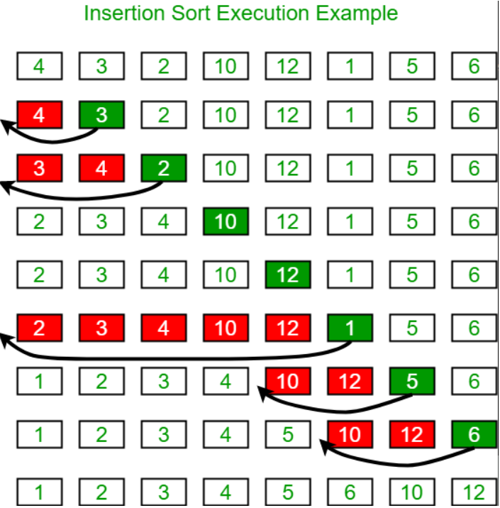
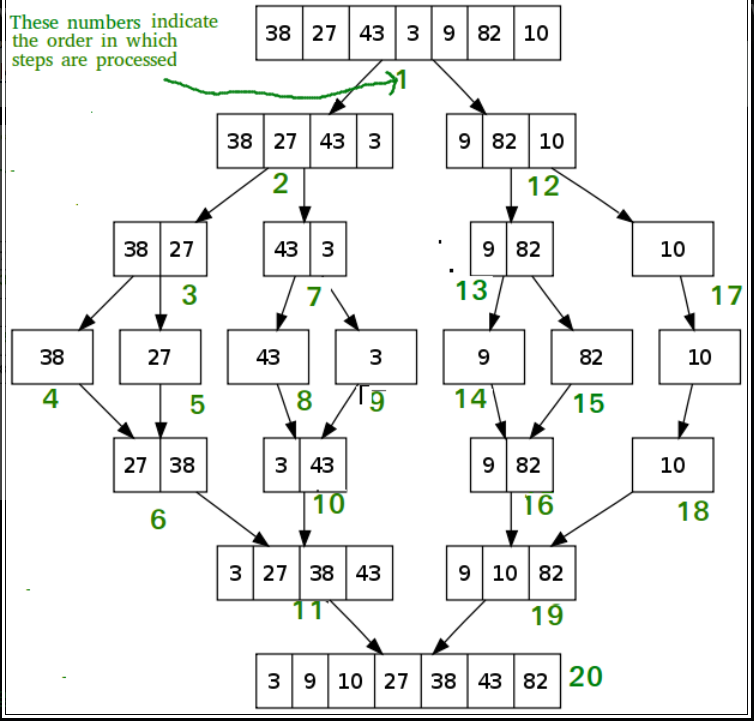

| Insertion Sort | Merge Sort | |
|---|---|---|
| animated visualizations |  |
 |
| pictures of iterations |  |  |
| text summaries | Insertion sort is a simple sorting algorithm that works similar
to the way you sort playing cards in your hands.
The array is virtually split into a sorted and an unsorted part. Values from the unsorted part are picked and placed at the correct position in the sorted part.
Algorithm
To sort an array of size n in ascending order:
1: Iterate from arr[1] to arr[n] over the array.
2: Compare the current element (key) to its predecessor.
3: If the key element is smaller than its predecessor, compare it to the elements before. Move the greater elements one position up to make space for the swapped element. |
Like QuickSort, Merge Sort is a Divide and Conquer algorithm.
It divides the input array into two halves, calls itself for the two halves,
and then merges the two sorted halves. The merge() function is used for merging two halves.
The merge(arr, l, m, r) is a key process that assumes that arr[l..m] and arr[m+1..r] are sorted and merges the two sorted sub-arrays into one.
See the following C implementation for details. |